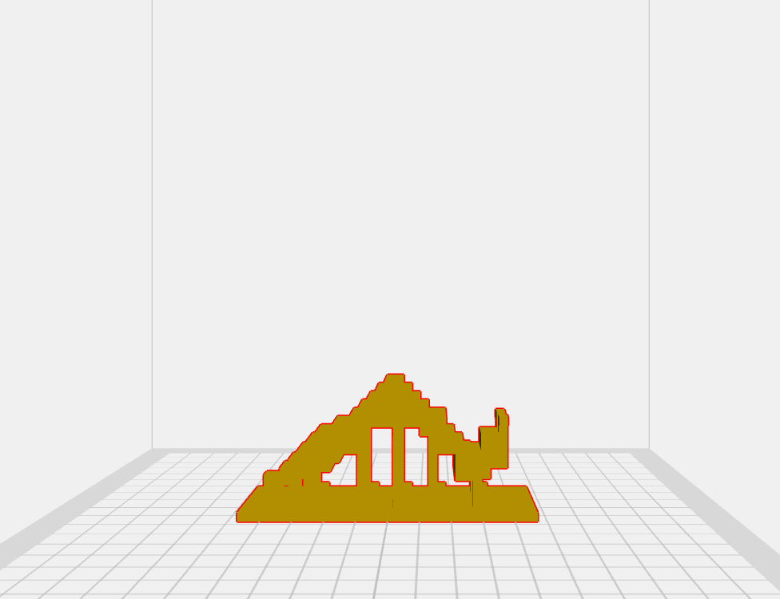
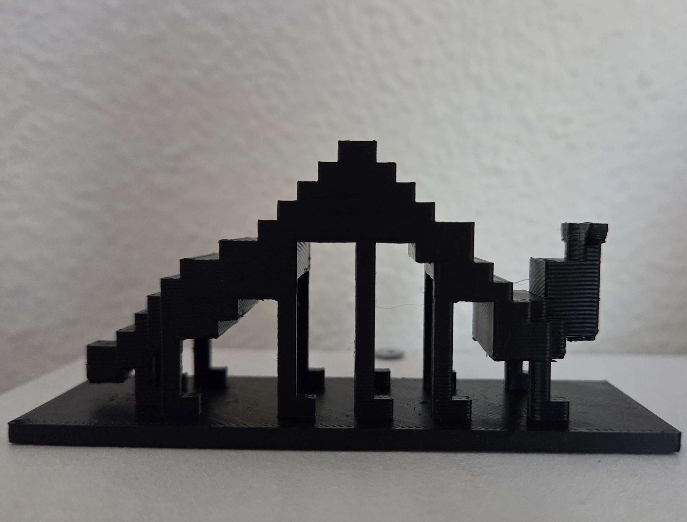

The question was, does digital sculpture translate into physical sculpture?
Given the results of this experiment, I would say they do. The design of my sculpture eliminated the need for scaffolding, so you could see the design of the caterpillar very clearly. I still need to paint my caterpillar before he turns into a butterfly.